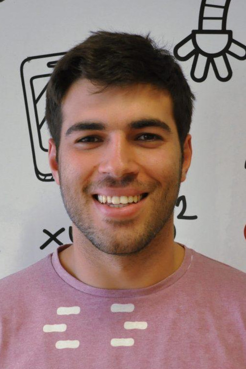
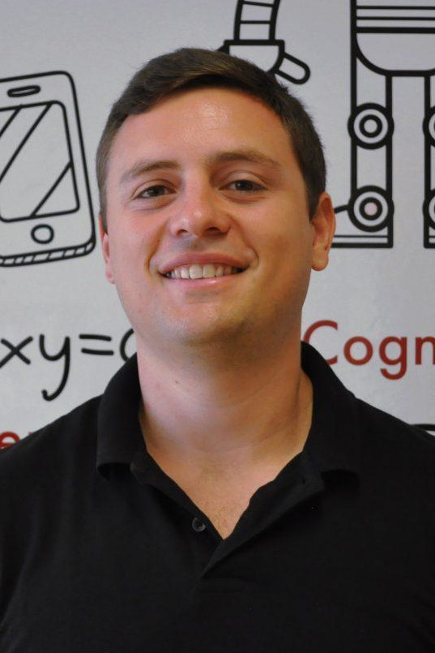
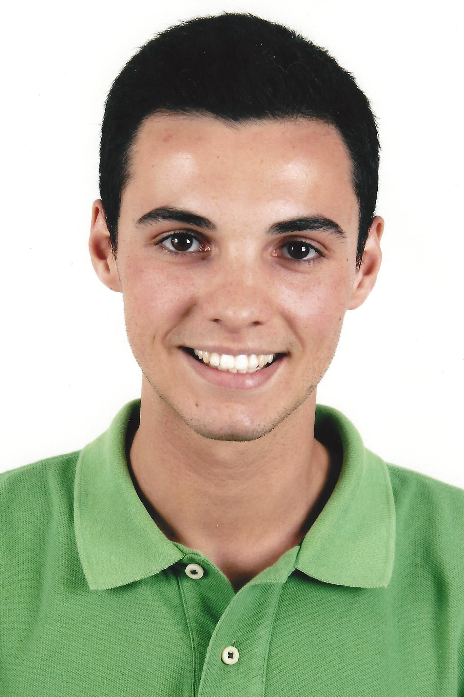
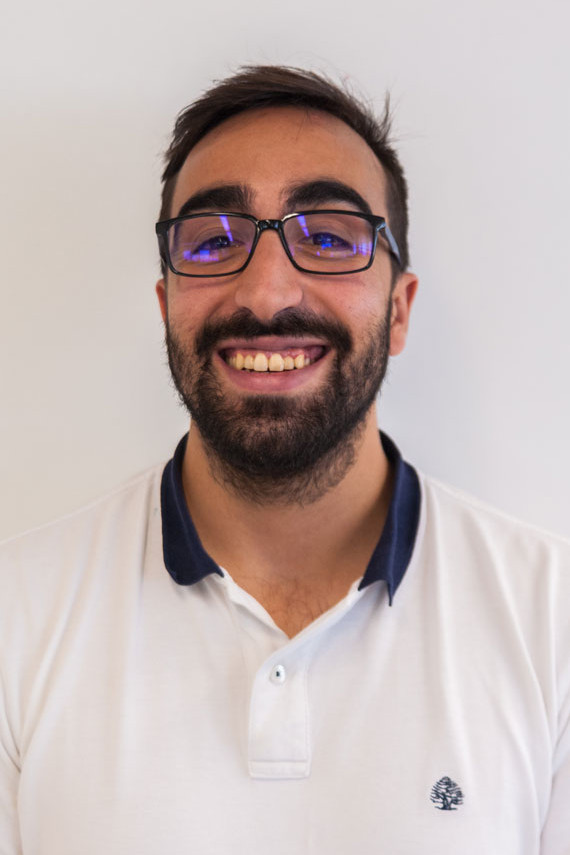
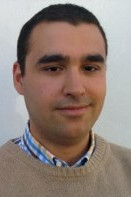
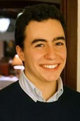

Home
Publications
Students
CV
PhD Students:

G. Dias Pais (IST)
2020-2024

Andre Mateus (IST)
2017-2021
Scholarship Grantees:

Valter Piedade (IST)
2020-2021

Tiago Dias (IST)
2015-2019

Joao Campos (IST)
2017-2018

Francisco Eiras (IST)
2017-2018
Romulo Rodrigues (IST)
2016-2017
Jose Iglesias (IST)
2015-2017
Master Students:
[2021] L. Lopes (ECE/IST),
A SLAM Module for the Formula Student Competition;
[2021] D. Morgado (ECE/IST),
Labeling of Object in a Road Scene;
[2021] L. Cardoso (ECE/IST),
Automatic vehicle and pedestrian labeling;
[2021] V. Piedade (ECE/IST),
A robust and accurate method for counting vehicles;
[2021] Diogo Oliveira (ECE/IST),
Single Image Plane Reconstruction;
[2020] Aldo Teran (ECE/KTH),
Acoustic-Inertial Forward-Scan Sonar Simultaneous Localization and Mapping
;
[2020] Elisa Bin (ECE/KTH),
MPC-based Visual Servo Control for UAVs
;
[2018] G. Dias Pais (ECE/IST),
OmniDRL: Robust PD using omnidirectional cameras and deep RL
;
[2017] Soraia Ferreira (ECE/IST),
Mobile Arm Visual Servoing for Object Manipulation
;
[2017] José Mendes (ECE/IST),
Forensic use of Mobile Phone Cameras: Measuring the Height of a Person
;
[2016] Luis Luz (ECE/IST),
Cooperative Perception for People Tracking and Human-Aware Navigation
;
[2016] Diogo Maximino (ECE/IST),
Improvement of Non-Central Catadioptric Cameras Pose Estimation Using 3D Lines
;
[2015] João O'Neill (ECE/IST),
Semantic Maps for Domestic Robots
;
[2015] António Ribeiro (ECE/UC),
"Odometria Visual usando campos visuais não sobrepostos"
;
[2014] Tiago Dias (ECE/UC),
Augmented Reality using Non-Central Catadioptric Imaging Devices
.